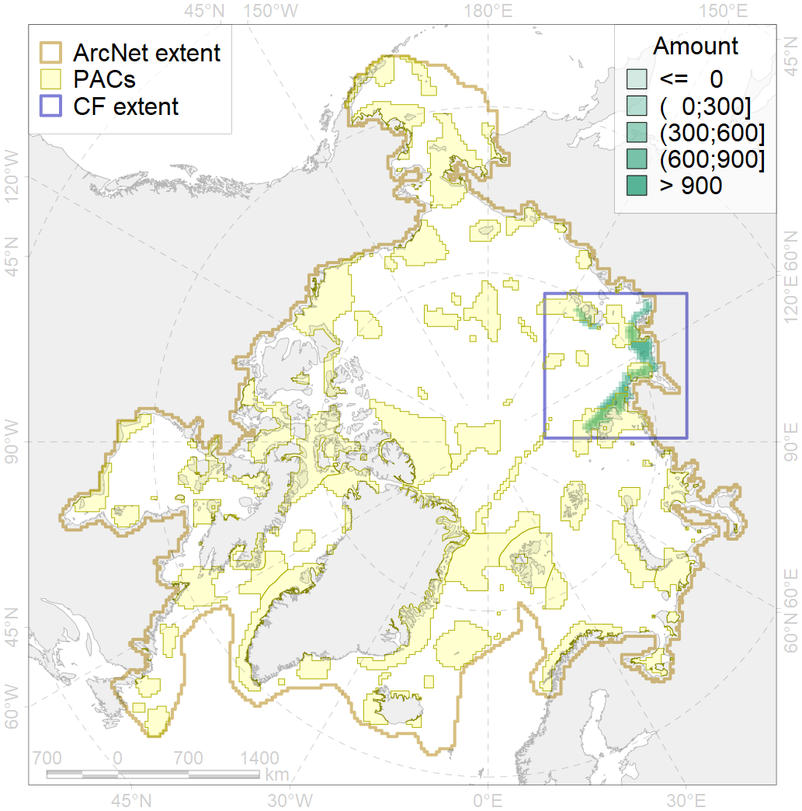
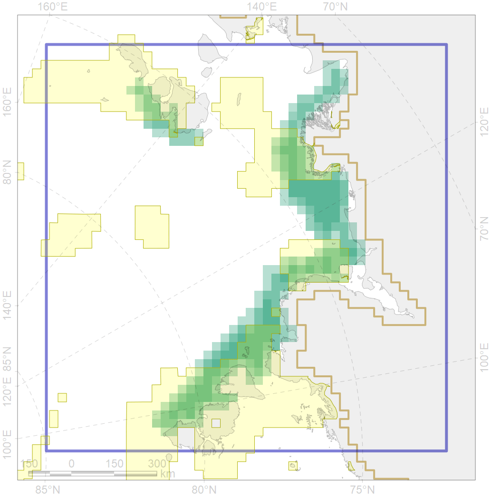

2013

| CF code | 2013 |
| CF name | Bearded seal whelping areas in the Laptev Sea |
| Time Period | 2007-2018 |
| Source(s) | Surrogate data; sea ice conc files by Will Merritt prepared based on https://nsidc.org/data/seaice_index, bathymetry from http://www.naturalearthdata.com/downloads/10m-physical-vectors/ |
| Seasonality | March-June |
| Depth Horizon | 0-200 m |
| Methodology | Habitat preference research and expert input |
| Use Restrictions | Open source |
| Author Name | Irina Trukhanova |
| Notes | |
| Scenario’s Target | 0.24 |
| Target Achievement | 0.510 (Scenario: 212.4%) |
| PAC | Share of the Total Amount within the PAC | Share of the Target Achievement for the ArcNet | PAC’s Contribution to the Target Achievement |
|---|---|---|---|
| 11 | 4.9%4.9% | 19.6%19.6% | 9.2%9.2% |
| 12 | 9.3%9.3% | 38.1%38.2% | 17.9%18.0% |
| 13 | 9.5%9.5% | 37.6%37.6% | 17.7%17.7% |
| 14 | 27.6%27.6% | 100.9%100.9% | 47.5%47.5% |
| inner | 51.3%51.3% | 196.2%196.3% | 92.4%92.4% |
| outer | 48.7%50.0% | 16.2%21.0% | 7.6%9.9% |
| † supplement values are for area consistence whereas principal values are for Accenter compatible gridded stats |